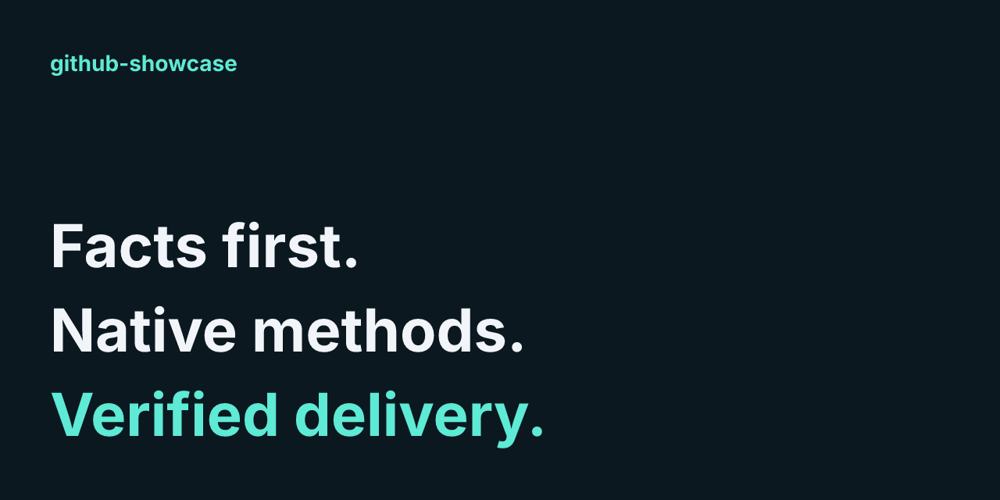
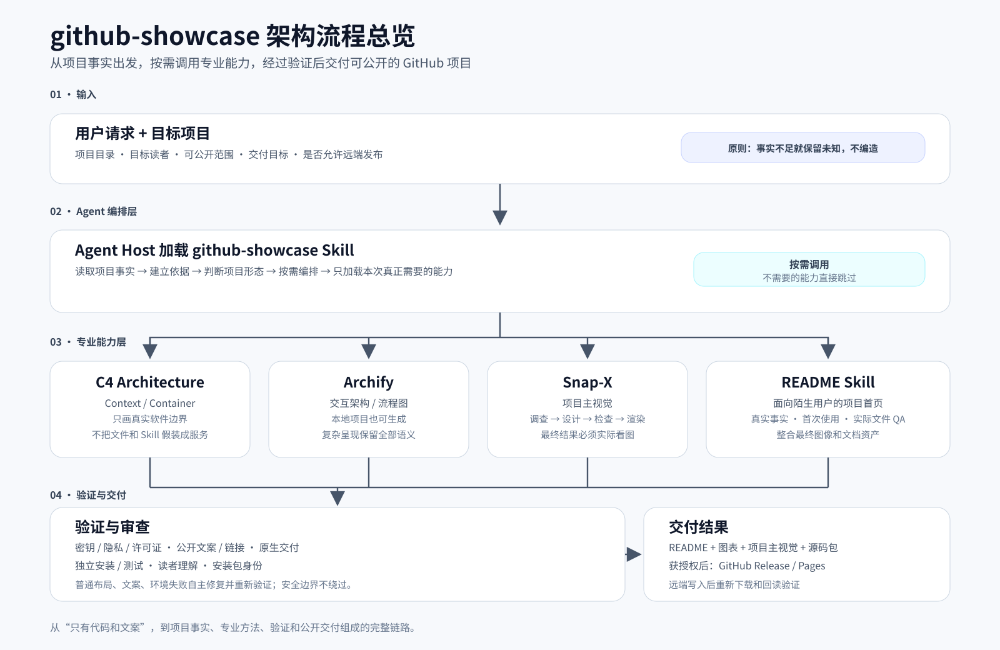

github-showcase
把一个本地项目，整理成陌生人看得懂、装得上、跑得通的 GitHub 项目。
Agent 读取真实源码，按需生成 README、架构图、流程图和项目视觉，
并在发布前验证安装、链接、隐私、许可证与最终交付。
下载 RC4 · 在线交互图 · 查看 Skill
本页索引
为什么需要它 · 它是怎么工作的 · 你会得到什么 · 快速安装 · 第一次使用 · 架构与本地进程 · 发布与中断恢复 · 当前验证范围 · 许可证
为什么需要它
项目已经做出来了，别人却不知道为什么要用、怎么安装、第一步该做什么。你可能正遇到这些问题：
- README 还是半成品，功能说明跟不上真实代码。
- 代码在你本机能跑，陌生人却不知道怎么安装、怎么验证。
- 想补架构图、流程图和项目主视觉，又不想让 AI 凭空编功能。
- 准备开源，希望发布前检查密钥、隐私、许可证和断链。
- 想让 Agent 把项目交付完，而不只是写一段漂亮文案。
从“代码能跑，但只能自己看懂”，到“别人能理解、能按说明开始用，也能核对发布结果”。
普通 README generator 主要把项目变成文案。github-showcase 是 Agent 加载的 Skill：除了编写首页，还会按事实调用专业方法，验证安装与安全，并在获得发布授权后回读 GitHub 的真实结果。
它是怎么工作的

你提供项目目录、目标读者、可公开范围和交付目标。Agent 先读取事实，再按项目类型和任务选择真正需要的能力；生成的 README、架构图、流程图和主视觉都要经过相应的安全、引用、安装与交付验证。
布局、文案、环境等普通失败由 Agent 自主修复并重新验证；安全边界不绕过。缺少事实就保留未知，不编造功能或数字。远程发布需要明确授权。
打开完整交互流程图 · 查看总览的可编辑源码 · 主视觉源文件
你会得到什么
| 你得到什么 |
github-showcase 怎么做 |
| README |
从真实源码和可验证命令出发，不编造功能和数字 |
| 架构 / 流程图 |
软件边界用 C4，交互图用 Archify；没有对应事实就不画 |
| 项目主视觉 |
Snap-X 完成设计、渲染，并实际检查最终图片 |
| 可安装源码包 |
对代码项目，在全新克隆和独立目录验证安装、首次运行与测试 |
| 安全发布 |
检查密钥、隐私、许可证和公开范围，发布后再回读远端 |
没有测量数据，就用能力分类而不编造收益图表；没有真实视频需求，就跳过视频。输出写入新的展示目录，检查记录留在私有目录。
快速安装
需要可读文件、可执行命令的 Agent 和 Python。下载 RC4，解压后进入 github-showcase/：
# 1. 检查当前环境
python scripts/doctor.py
# 2. 需要图像 / 图表时安装锁定依赖（Node.js 24+）
npm ci --no-audit --fund=false
# 3. 验证内置资源
python scripts/verify-vendors.py
把完整 github-showcase 目录放进 Agent 的 Skill 发现目录，或直接让 Agent 读取其中的 SKILL.md。不要只复制入口文件；方法、工具和许可证都包含在固定版本 ZIP 中。后续命令从解压的 github-showcase/ 根目录运行。
Python 是基础要求；Node.js 24+ 和 Chrome/Chromium 用于图像、图表渲染，Git 用于源码打包。Doctor 会报告实际依赖，缺少不相关的可选能力不会阻塞本地文字任务。有 route plan 时，运行 python scripts/doctor.py --plan <plan.json> 核对本次所需工具。
已有本机浏览器时，安装前设置实际可执行文件路径，例如 PowerShell：
$env:PUPPETEER_SKIP_DOWNLOAD = "true"
$env:ARCHIFY_CHROME = "<本机 Chrome 或 Chromium 可执行文件的完整路径>"
$env:PUPPETEER_EXECUTABLE_PATH = $env:ARCHIFY_CHROME
npm ci --no-audit --fund=false
这里的路径需要替换成你的真实浏览器位置。也可用 doctor.py --runtime-config <json> 指定本机 node、git、browser；此配置留在本地。JSON routing 使用标准库；选择 YAML adapter 或检查公开 Actions 配置时，按需安装 python -m pip install PyYAML==6.0.3。没有视频需求就跳过视频，不需安装可选 ffmpeg。
doctor.py 应报告 READY，verify-vendors.py 应报告 PASS。安装完整检查：
python -m unittest discover -s tests -p "test_*.py"
这些结果证明本机安装与锁定资源可用；具体项目仍需要自己的首次运行和检查。
RC4 是 Pre-release。安装使用固定版本 ZIP；克隆仓库用于阅读或开发。图片、展示文档和 Pages 配置不用放进 Skill 发现目录。
第一次使用
把下面的请求交给已加载 Skill 的 Agent，并填入你的项目目录：
使用 github-showcase，整理我指定的本地项目。
目标读者是第一次接触项目的开发者。
先读取真实源码，核对功能和首次使用命令；按需补架构图、流程图和项目主视觉。
输出到新的独立目录，完成安全、链接、读者理解和源码包验证。
普通失败请自主修复并重新验证，不覆盖未知用户改动。
本次只准备本地结果，不发布到 GitHub。
你应得到该任务需要的 README、图表、主视觉、源码包，以及说明哪些内容已验证、哪些仍未知的检查记录。需要发布时，再明确授权目标仓库和公开范围；安装这个 Skill 本身不会启动托管服务。
常见任务
- 补齐已有项目首页：指定项目目录、已认可文案和缺失内容；Agent 从源码核对，再在新导出目录生成简介、页内索引与完整说明。
- 补图和主视觉：指出要解释的架构或流程；Agent 只选择有事实依据的方法，README 直接展示所有必需静态预览，可选交互图作为补充。
- 准备公开交付：指定目标仓库、可公开文件范围和发布授权；完成安装、安全、许可及远端回读后再报告实际发布状态。
生成的完整展示默认在同一 README 讲清安装、使用、架构、流程与边界，不要求新读者先打开 docs 找答案。你明确要求局部文案或另一种布局时，Agent 按该范围交付并说明未覆盖项。
架构与本地进程
github-showcase 的方法文件由 Agent host 加载；Python 和 Node 是实际可运行的 CLI 边界。vendor 方法资源不是独立服务。Context 面向项目使用者；Container 面向安装者和维护者。更深组件、部署或动态视图未因本次读者问题触发。
系统边界
打开交互图 · 本地 HTML · 可编辑数据 · C4 Mermaid 源码 · C4 原生渲染
| 从 → 到 |
动作与机制 |
当前依据 |
| 项目使用者 → 方法 |
指定范围与批准公开，用户请求 |
SKILL.md、项目契约 |
| Agent host → 方法 |
读取 Skill 及按需资源，文件 |
SKILL.md |
| 方法 → 目标项目 |
读取事实并生成获批导出，文件系统 |
route-plan.py、package-project.py |
| 方法 → GitHub |
仅授权后公开与回读，Git/HTTPS |
references/publish-backends.md |
本地工具进程
打开交互图 · 本地 HTML · 可编辑数据 · C4 Mermaid 源码 · C4 原生渲染
| 从 → 到 |
动作与机制 |
当前依据 |
| Agent → Python |
调用 route、gate、packaging CLI |
SKILL.md、scripts/route-plan.py、scripts/release-gate.py |
| Agent → Node |
调用图像与图表工具 CLI |
scripts/snap-x.mjs、scripts/render-c4.mjs、原 Archify CLI |
| Node → 浏览器 |
交付 HTML，DevTools 检查 |
Archify 原生 browser-check、Mermaid wrapper |
| Python → 项目文件 |
核对字节和清单，文件系统 |
scripts/runtime-package.py |
| Python → Git/文件系统 |
打包已提交源码，Git CLI |
scripts/package-project.py |
| Git → GitHub |
授权后普通推送，Git/HTTPS |
references/publish-backends.md |
图例颜色沿原生 Viewer 类型显示，描述文字才是 C4 身份依据：方法不是服务，文件节点不表示运行了数据库。关系状态是源码定义的当前执行方法，不能把图中的连线理解为宿主强制策略。
项目使用者 ──▶ Agent Host ──[加载方法]──▶ github-showcase
├──[执行]──▶ Python CLI ──▶ 项目文件 / Git
└──[执行]──▶ Node CLI ──▶ Chrome / 图像与图表
Git ──[明确授权后的 HTTPS]──▶ GitHub
发布与中断恢复
打开交互图 · 本地 HTML · 可编辑数据
先完成本地检查和干净导出。授权不足时保留本地结果；得到明确授权才普通推送，并将 tag 绑定实际公开 commit。Pre-release 上传固定安装包，随后回读 tag、Release、资产字节与 Pages，再从远端全新克隆和安装。
普通传输或展示问题应修复后重试；真实凭据不得公开，历史 tag 不得移动，未知用户内容不得覆盖。检查失败不能伪造 PASS。这个流程描述方法义务，不证明任意宿主无法绕过。具体机制见发布契约。
中断后，先读取本轮的 route plan、已生成文件和检查记录，核对实际文件身份，再继续缺失步骤。旧 PASS 不能证明已变化的内容；普通失败修复后重跑对应检查。出现未知用户改动时保留当前文件和已有结果，先比较差异，不强行覆盖。没有发布授权、存在真实密钥或许可未解决时只保留本地交付，不能把失败写成已发布。
你可以明确请求：“继续上一次 github-showcase 任务；先核对本轮结果与记录，补齐缺失步骤，普通失败自主修复并复检，保留用户后续修改。”安装此 Skill 本身不会触发发布。
当前验证范围
RC4 已在 Windows + Python 3.14 + Node.js 24 + Chrome 环境完成安装、渲染和远端回读验证。Linux/macOS 和其他 Agent 宿主尚未做同等级实测，目前不宣称跨平台完全验证。
github-showcase 能检查文件、安装和发布链路，但最终业务语义仍需要 Agent 或维护者判断。它不提供跨宿主强制限制、自动密钥修复或性能提升保证。
许可证
项目采用 MIT。内置方法的许可见第三方声明；交互展示的代码和字体另见展示资产许可与字体 OFL。